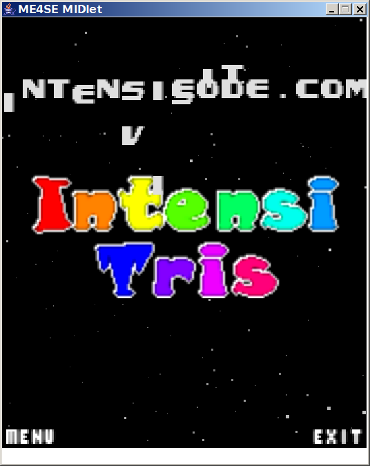
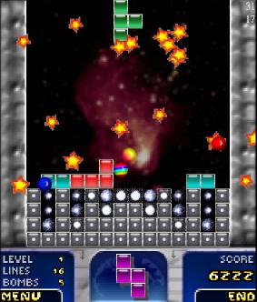
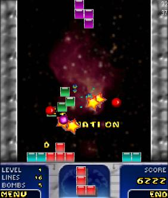

{kind=link}
{kind=link}

Simple Tetris clone. Implemented only the basic game play. No FX and no hiscore, etc.
Using this BBC wallpaper for the background. Using an outdated and slightly changed version of ME4SE to run the MIDlet on J2SE.
|  | |
 |  |
| Title screen | Start | Before detonation | After detonation |
| Key | Function |
| UP | Rotate tile |
| DOWN | Move tile down |
| LEFT/RIGHT | Move tile left/right |
| SPACE | Drop tile |
| COMMA | Left softkey (bottom left menu action) |
| DOT | Right softkey (bottom right menu action) |
NOTE: All versions assume a screen size of 176x208 pixels. The engine will, however, adapt the screen layout as good as possible to the device specific screen size. Unfortunately this results in several GFX/UI glitches.
If you want a build for your specific phone and/or screen size just send me an email to IntensiTris AT IntensiCode DOT com. I'll see what I can do for you. (Or just wait until I have released this thing on JavaForge and then use it to build a device-specific version yourself.)
Reference build for a generic CLDC10 MIDP2 J2ME device.
Reference build for a NOKIA UI compatible CLDC10 MIDP2 J2ME device. (This includes Sony Ericsson devices like K750, K700, etc.)
Experimental build for a NOKIA UI compatible CLDC10 MIDP1 J2ME device. This has some serious issues because of missing alpha support.
| Key | Function |
| UP or 2 | Rotate tile |
| DOWN or 8 | Move tile down |
| LEFT/RIGHT or 4/6 | Move tile left/right |
| STAR | Drop tile |
| LEFT SOFKEY | Left softkey (bottom left menu action) |
| RIGHT SOFTKEY | Right softkey (bottom right menu action) |
{kind=link}
{kind=link}